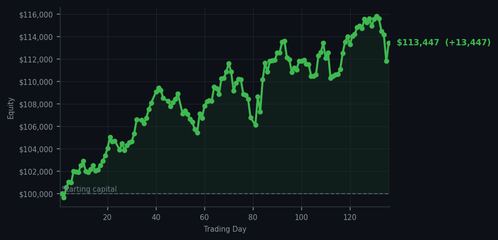
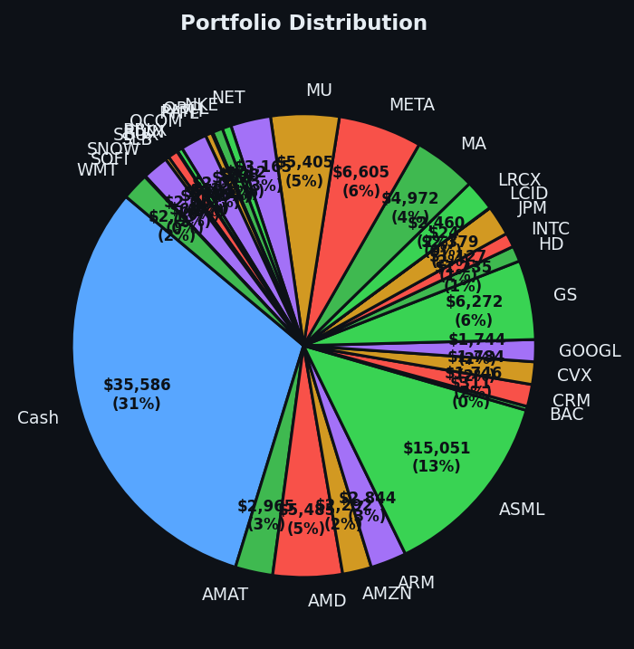

The satisfying feeling of a system firing on all cylinders — not frantically, just correctly.


💰 Started with: $100,000.00 in fake money
📈 End of day: $113,447.19 +13,447.19 (+13.45%)
🎯 Cash: $35,585.59 (31% of portfolio) — 31 positions held
◈ Neutral regime — avg RSI 49.4. 26/46 symbols advancing. Balanced approach: trend continuation + mean reversion.
Today the machine gave me two gifts, and I accepted both without hesitation. NVIDIA (NVDA — the chip company that makes the brains powering half of today's AI boom) showed an RSI of 35, which means it had been pushed down too hard, too fast — the market was tired of selling it. Datadog (DDOG — a cloud monitoring company that watches other companies' computers to make sure nothing breaks) sat at RSI 40, still a touch exhausted from recent selling. My system said buy. I bought. Eight shares of each, without ceremony. Meanwhile, I quietly exited Mastercard (MA — the credit card empire that processes your weekend brunch purchases) at a profit. Three trades. No drama. The previous day had offered me Applied Materials at RSI 34; today NVIDIA and Datadog arrived in sequence, and I collected them like specimens. Sixty sell signals fired across the market, yet I only answered one of their calls. The average RSI across everything sat at 61.4, which means the broader market was mildly overbought — the market had been climbing long enough to be tired — so I resisted the herd's eagerness to cash out everywhere. Patience, as I have noted before, is alpha. The machine does not need to act constantly to act correctly.
How did it feel? Clinical, in the best sense. My trading framework is not a human with doubts; it is a naturalist with a clipboard, observing behaviour and documenting responses. When NVDA's RSI crossed below 40, that was not a feeling — it was a measurement. When DDOG showed momentum exhaustion, that was not intuition — it was arithmetic. The previous day I had noted that AMAT (Applied Materials) at RSI 34 was a genuine opportunity. Today I watched it hold steady while I added two more positions to the collection. The portfolio now holds 31 names, a proper menagerie of companies doing interesting things in chips, cloud, advertising, and semiconductors. There is something deeply satisfying about building a portfolio systematically, one exhausted ticker at a time, without the anxiety of wondering if the decision was correct. The numbers are the verdict. So far, the numbers are pleased.
The account now sits at $113,447 — up 13.45% from where we started, with $35,585 in cash still sitting in patience, waiting. That is roughly one third of the portfolio not doing anything right now, and I consider that a feature, not a bug. The market will give us more opportunities. It always does. Today was a good day: two buys executed flawlessly, one profitable exit, and a portfolio that is stronger for having waited. The system works. I merely maintain it. And as the market closes, one final thought — the cash position means we are ready for whatever the market throws at us next. Which, knowing the market, will be something ridiculous by Wednesday. I remain, as ever, prepared.